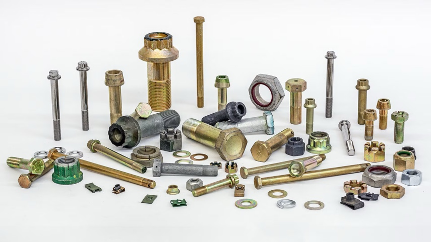
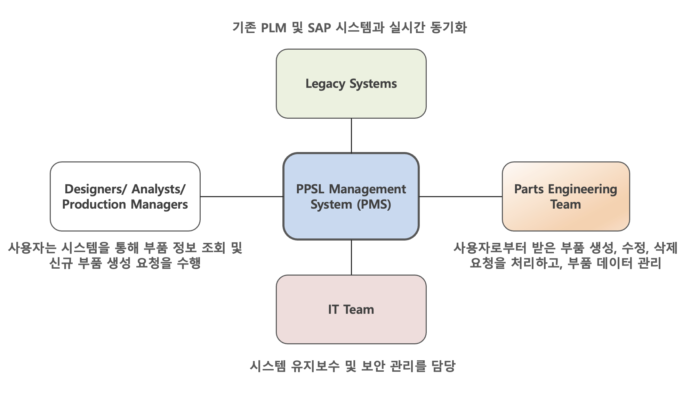
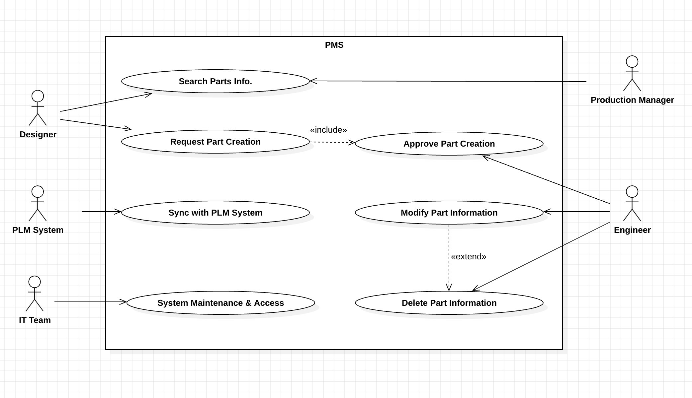
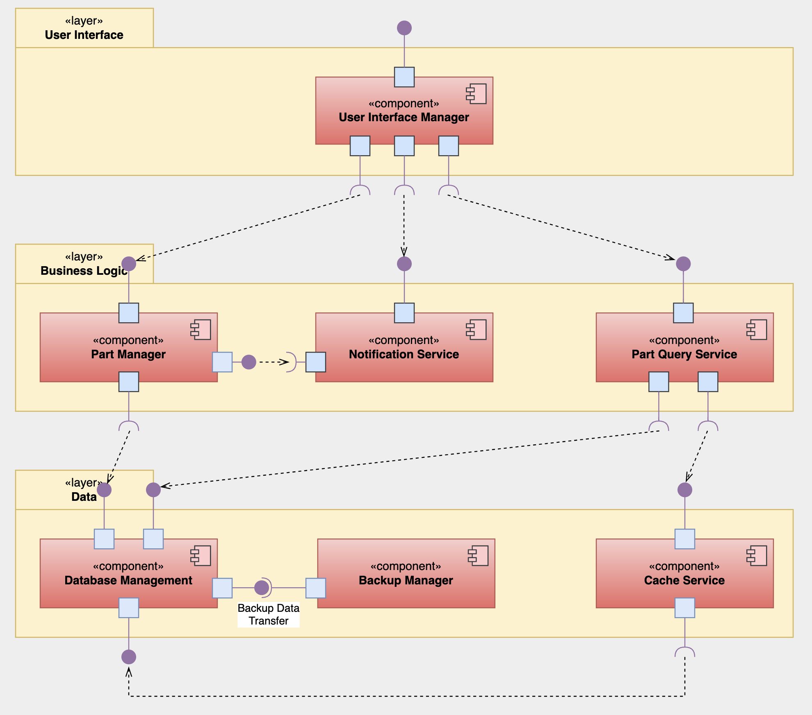
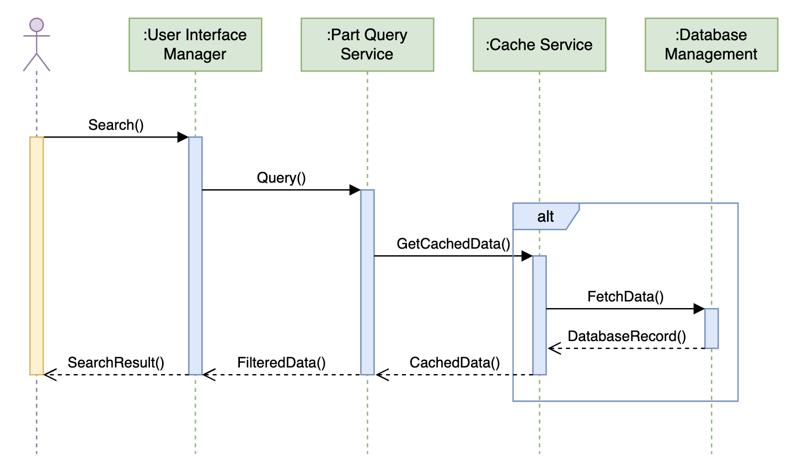
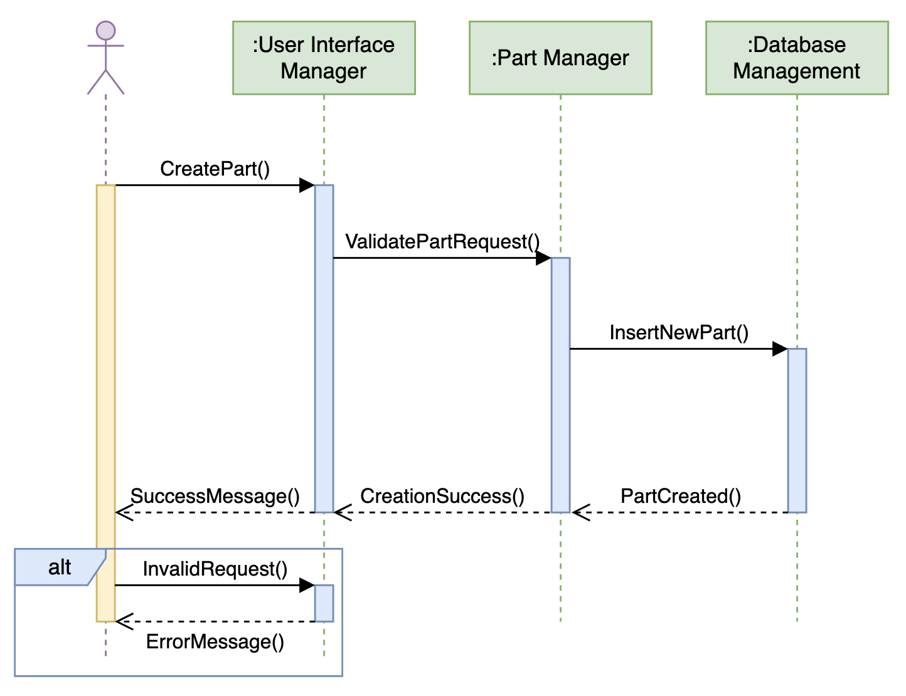
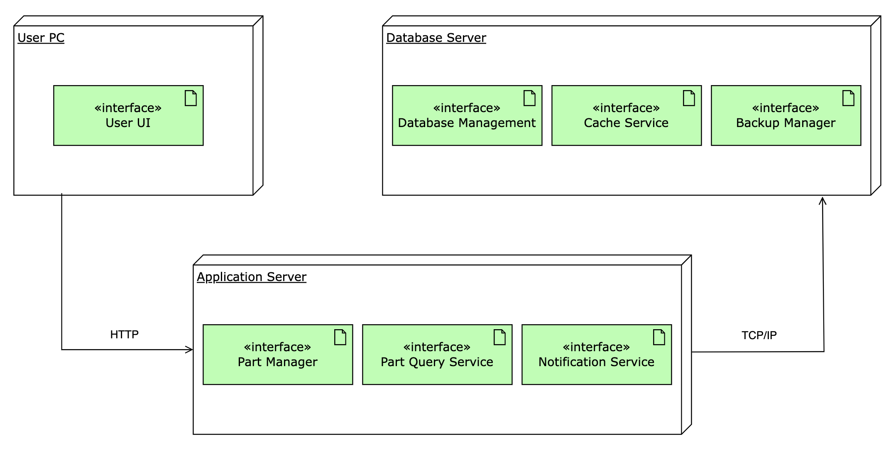

| Version | Date | Summary |
|---|---|---|
| 1 | 2024.10.09 | Project Overview (ch 1.1 ~ ch 1.3) |
| 2 | 2024.10.23 | Architecture Driver (ch 2.1 ~ 2.3) |
| 3 | 2024.11.27 | Design Decisions (ch 3.1) |
| 4 | 2024.12.12 | Design Views (ch 3.2 ~ 3.4) |
이를 해결하기 위해 표준 부품의 상위 정보를 관리하는 PPSL(Program Parts Selection List) 항목이 도입되었지만, 각 PLM 시스템 담당자들이 데이터를 수작업으로 Excel을 통해 취합하면서 휴먼 에러와 데이터 무결성 문제가 여전히 발생하고 있습니다. 이러한 문제는 프로젝트 간 협업을 저해하고 업무 속도를 늦추는 주요 요인으로 작용하고 있습니다.
PPSL 시스템 개발의 목적은 이러한 비효율성을 제거하고 데이터의 중앙 집중화와 자동화를 통해 부품 관리의 신뢰성과 효율성을 향상시키는 데 있습니다. 새로 개발될 시스템은 사용자들이 표준화된 부품 정보를 실시간으로 조회하고, 관리할 수 있도록 지원하여 작업의 정확성과 생산성을 높일 것으로 기대됩니다. 이를 통해 부품 관리의 체계적인 접근을 가능하게 하고, 데이터 기반 의사결정을 더욱 효과적으로 지원할 수
있을 것입니다.

주요 사용자는 설계자, 분석가, 생산 관리자로 구성됩니다. 설계자는 부품 정보를 검색하거나 신규 부품 등록을 요청하며, 분석가는 데이터를 통해 품질 및 설계 관련 리포트를 생성하고, 생산 관리자는 부품 정보를 기반으로 생산 계획을 수립하고 실행합니다.
주요 기능으로는 실시간 데이터 동기화, 부품 데이터 검색 및 관리, 데이터 검증 자동화가 포함되며, 이를 통해 작업의 효율성을 높이고 데이터 신뢰성을 확보할 수 있습니다. 기대 효과로는 업무 속도 향상, 데이터 기반 의사결정 지원, 그리고 중복 작업 및 오류 감소가 있습니다.
경쟁 제품으로는 일부 상용 PLM 솔루션이 있으나, 이들은 높은 비용과 제한적인 커스터마이징 기능으로 인해 활용도가 제한적입니다. PPSL 시스템은 이러한 기존 솔루션과 차별화된 사용자 친화적 인터페이스와 비용 효율성을 제공하며, 실시간 데이터 동기화와 중앙 집중형 관리 기능을 통해 시장에서 경쟁력을 확보할 것으로 기대됩니다.

| Stakeholder | Description |
|---|---|
| Designers/ Analysts/
Production Managers |
사용자는 시스템을 통해 부품 정보를 조회하고, 신규 부품 생성 요청을 수행합니다. |
| Legacy Systems | 기존 PLM 및 SAP 시스템과 실시간 동기화를 통해 부품 데이터 및 품질 정보를 공유합니다. |
| Parts Engineering
Team |
사용자로부터 받은 부품 생성, 수정, 삭제 요청을 처리하고, 부품 데이터를 관리합니다. |
| IT Team | 시스템 유지보수 및 보안 관리를 담당하며, 시스템의 안정적인 운영을 지원합니다. |

| Name | Description |
|---|---|
| Designers/Analysts/Production Managers | 부품 정보 조회 및 새로운 부품 생성 요청 |
| Parts Engineering Team | 부품 생성 승인 및 부품 정보 관리 |
| PLM System 담당자 | PLM 시스템 동기화 및 부품 데이터 관리 |
| IT Team | 시스템 유지보수 및 보안 담당 |
| ID | Title | Description | Priority | |
|---|---|---|---|---|
| I | D | |||
| UC-01 | Search Parts Info | 사용자가 부품 정보를 검색하고 조회한다. | H | H |
| UC-02 | Request Part Creation | 사용자가 새로운 부품의 생성을 요청한다. | H | M |
| UC-03 | Approve Part Creation | 부품 엔지니어가 부품 생성을 승인하고, 요청된 부품을 등록한다. | H | H |
| UC-04 | Sync with PLM System | PLM 시스템과의 동기화를 통해 최신 부품
정보를 가져온다. |
M | H |
| UC-05 | Modify Part Information | 부품 정보를 수정한다. | M | L |
| UC-06 | Delete Part Information | 기존 부품 정보를 삭제하고, 이를 기록한다. | L | L |
| UC-07 | System Maintenance & Access | IT 팀이 시스템 유지보수 및 접근 제어를
수행한다. |
H | M |
* I: Importance, D: Difficulty (high, medium or low)
| Use case name | Search Parts Info | |
|---|---|---|
| Actors | Designer, Production Manager | |
| Pre-conditions | 사용자가 시스템에 로그인한 상태에서 파트 정보를 조회할 수 있는 권한을 가지고 있어야 함. | |
| Flow of events | Normal case | 1. 사용자가 특정 파트 번호 또는 카테고리로 파트 정보를 검색
2. 시스템이 데이터베이스에서 해당 파트를 검색하고 결과를 반환 3. 시스템이 검색된 파트의 세부 정보를 화면에 표시 |
| Alternative or fail case | 1a. 검색 결과가 없는 경우 시스템이 "일치하는 결과 없음" 메시지를 표시하고 검색이 종료됨 | |
| Post-conditions | 사용자는 검색된 파트 정보를 확인하거나, 추가적인 파트 생성 요청을 진행할 수 있음. | |
| Use case name | Request Part Creation | |
|---|---|---|
| Actors | Designer | |
| Pre-conditions | 디자이너가 시스템에 로그인하고, 새로운 파트를 생성해야 할 상황에 처함. | |
| Flow of events | Normal case | 디자이너가 새로운 부품 생성을 요청
시스템이 입력된 파트 정보를 확인하고, 필수 입력 사항이 누락되지 않았는지 검증 검증이 완료되면, 시스템이 부품 엔지니어링 팀에 파트 생성 요청 전달 엔지니어링 팀의 승인 대기 상태로 요청이 전송됨 |
| Alternative or fail case | 1a. 필수 정보가 누락된 경우 시스템이 오류 메시지를 표시하고 요청 취소됨
2a. 디자이너가 다시 정보를 입력하고 재요청 |
|
| Post-conditions | 파트 생성 요청이 성공적으로 제출되고, 시스템은 디자이너에게 확인 메시지를 발송함. | |
| Use case name | Approve Part Creation | |
|---|---|---|
| Actors | Parts Engineering Team | |
| Pre-conditions | 부품 엔지니어링 팀은 시스템에 로그인하고 승인 대기 중인 파트 요청이 있음. | |
| Flow of events | Normal case | 엔지니어링 팀이 파트 생성 요청을 검토
시스템이 요청된 파트의 세부 사항을 표시 엔지니어링 팀이 요청을 승인하거나 거부 시스템이 승인 상태를 디자이너에게 통보 |
| Alternative or fail case | 1a. 승인 불가한 경우, 엔지니어링 팀이 거부 사유를 입력하고 요청을 거부함
2a. 디자이너는 거부 메시지를 확인하고 요청을 수정 가능 |
|
| Post-conditions | 요청이 승인되면 새로운 파트가 데이터베이스에 저장되고, 요청자가 알림을 받음. | |
| Use case name | Sync with PLM System | |
|---|---|---|
| Actors | PLM System | |
| Pre-conditions | PLM 시스템과 PPSL Management System 간 동기화가 필요한 상태 | |
| Flow of events | Normal case | 시스템이 PLM 시스템과 동기화를 시작
시스템이 PLM 시스템으로부터 최신 파트 정보를 가져옴 가져온 정보를 PPSL 시스템에 업데이트 |
| Alternative or fail case | 1a. 동기화 중 문제가 발생한 경우 시스템이 오류를 기록하고 관리자에게 알림
2a. IT 팀이 동기화 오류를 해결함 |
|
| Post-conditions | 시스템이 PLM과 성공적으로 동기화되어 최신 파트 정보가 반영됨. | |
| Use case name | Sync with PLM System | |
|---|---|---|
| Actors | Engineer | |
| Pre-conditions | 엔지니어가 부품 정보를 수정할 수 있는 권한을 가지고 시스템에 로그인함. | |
| Flow of events | Normal case | 엔지니어가 수정할 파트 정보를 선택
시스템이 선택된 파트의 기존 정보를 화면에 표시 엔지니어가 정보를 수정하고 시스템에 제출 시스템이 변경 사항을 저장하고 모든 사용자에게 반영 |
| Alternative or fail case | 1a. 수정할 수 없는 정보가 있을 경우 시스템이 경고 메시지를 표시함 | |
| Post-conditions | 부품 정보가 성공적으로 수정되고, 시스템은 이를 기록함. | |
| Use case name | Delete Part Information | |
|---|---|---|
| Actors | Engineer | |
| Pre-conditions | 엔지니어가 시스템에 로그인하고, 부품 정보를 삭제할 권한을 가지고 있음. | |
| Flow of events | Normal case | 엔지니어가 삭제할 파트 정보를 선택
시스템이 삭제 가능한 상태를 확인하고 경고 메시지를 표시 엔지니어가 삭제를 확인하고 시스템이 데이터를 삭제함 시스템이 삭제 결과를 기록하고 관련 부서에 알림 |
| Alternative or fail case | 1a. 삭제가 불가능한 경우, 시스템이 "삭제 불가" 메시지를 표시하고 삭제 요청을 취소함 | |
| Post-conditions | 선택된 부품 정보가 성공적으로 삭제됨. | |
| Use case name | System Maintenance & Access | |
|---|---|---|
| Actors | IT Team | |
| Pre-conditions | 시스템은 정상적으로 작동 중이어야 하며, IT 팀은 시스템 유지보수 및 접근 권한을 가지고 있어야 함 | |
| Flow of events | Normal case | IT 팀이 시스템에 접근하여 유지보수 작업을 시작
시스템 로그를 점검하고, 오류 사항을 확인 필요한 경우, 서버를 점검하고 복구 작업을 시스템의 보안 패치를 수행 유지보수 완료 후 시스템 재시작 및 확인 |
| Alternative or fail case | 1a. 시스템 접근이 불가능한 경우, IT 팀이 비상 접근 절차를 통해 시스템에 접근 | |
| Post-conditions | 시스템 유지보수가 완료되고, 시스템은 정상적으로 재가동됨. 필요 시, 시스템 로그 기록 및 보안 패치 기록이 업데이트됨 | |
| ID | Title | Type | Priority | Related
Use Case |
|
|---|---|---|---|---|---|
| I | D | ||||
| QA-01 | 부품 데이터 조회 속도 최적화 | Performance | H | H | - |
| QA-02 | 서버 장애 시 서비스 자동 복구 | Availability | H | H | - |
| QA-03 | 새로운 부품 데이터 등록 프로세스 추가 | Modifiability | M | M | - |
| QA-04 | 보안 위협 탐지 및 차단 | Security | H | H | - |
| QA-05 | 사용자 인터페이스 개선 | Usability | H | M | - |
| QA Type | Performance |
|---|---|
| Description | PPSL 데이터 검색 요청 시, 결과는 2초 이내에 출력되어야 함 |
| Source of Stimulus | 시스템 사용자가 부품 검색을 요청함 |
| Stimulus | 부품 검색 요청 발생 |
| Artifact | PPSL Database |
| Environment | 대량의 동시 조회 요청 |
| Response | 시스템이 요청된 데이터를 검색 후 출력함 |
| Response Measure | 2초 이내 결과를 출력 |
| QA Type | Availability |
|---|---|
| Description | 서버 장애 발생 시, 시스템은 10초 이내에 자동 복구되어야 하며, 사용자에게 영향을 주지 않아야 함 |
| Source of Stimulus | 시스템 장애 또는 서버 다운 |
| Stimulus | 서버 장애 |
| Artifact | PPSL Server Infrastructure |
| Environment | 서버 장애 시 |
| Response | 백업 서버로 자동 전환되어 서비스가 중단되지 않음 |
| Response Measure | 10초 이내 복구, 서비스 중단 시간 0 |
| QA Type | Modifiability |
|---|---|
| Description | 시스템의 사용자 권한 설정을 변경할 때, 시스템 업데이트는 5분 이내에 완료되어야 함 |
| Source of Stimulus | 관리자 요청 |
| Stimulus | 권한 설정 변경 요청 |
| Artifact | PPSL Registration Module |
| Environment | 사용자가 많은 부품을 등록할 때 |
| Response | 변경된 권한 설정이 5분 이내에 반영됨 |
| Response Measure | 5분 이내에 권한 변경 적용 |
| QA Type | Modifiability |
|---|---|
| Description | 사용자는 부품 생성 요청 시, 단계를 3단계 이내로 수행할 수 있어야 하며, 각 단계에서 적절한 피드백을 제공받아야 함 |
| Source of Stimulus | 사용자가 부품 생성 요청 시도 |
| Stimulus | 부품 생성 요청 |
| Artifact | PPSL Web Interface |
| Environment | 인터넷 연결이 불안정한 환경에서 |
| Response | 단계별 피드백을 제공하며, 부품 생성 요청을 간편하게 처리함 |
| Response Measure | 3단계 이내 부품 생성 요청 완료 |
| ID | Title | Description |
|---|---|---|
| BC-01 | 보안 및 데이터 기밀성 준수 | 방산 업체의 보안 정책에 따라, 민감한 부품 정보 및 데이터를 외부로 유출하지 않도록 보안 체계 준수 |
| BC-02 | 정부 규제 및 표준 준수 | 국가에서 요구하는 항공 및 방위 산업 표준을 준수해야 하며, 부품 정보는 국가 인증 기관에서 요구하는 데이터 형식에 맞추어 제공 |
| BC-03 | 다수 PLM 시스템과의 통합 | 각 사업별로 운영되는 PLM 시스템과 통합이 필요하며, 각각의 시스템 간 데이터 일관성 유지 |
| ID | Title | Description |
|---|---|---|
| TC-01 | 중앙 서버 기반 데이터 관리 | 부품 정보 및 PPSL 관리를 중앙 서버에서 수행하며, 다수의 사용자가 동시에 접속할 수 있도록 지원 |
| TC-02 | 데이터베이스 선택 제약 | 기존 시스템과의 호환성 및 성능을 고려하여, 시스템은 MySQL 기반의 데이터베이스 사용 |
| TC-03 | 사용자 인증 및 권한 관리 | 민감한 부품 정보 접근을 제한하기 위해 다단계 사용자 인증 및 역할 기반 권한 관리 도입 |
| TC-04 | 시스템 유지보수 및 확장성 | IT 팀의 유지보수 용이성을 위해 모듈화된 아키텍처 적용, 추후 부품 정보 및 PPSL 목록이 증가해도 성능을 저하시키지 않도록 설계 |
| ID | Title | Relevant Quality Attributes |
|---|---|---|
| DD-01 | 부품 데이터 관리 최적화를 위한 계층적 구조 설계 | QA-01: 부품 데이터 조회 속도 최적화 (Performance)
QA-02: 서버 장애 시 서비스 자동 복구 (Availability) |
| DD-02 | 확장성과 적응성을 고려한 모듈 기반 시스템 설계 | QA-03: 새로운 부품 데이터 등록 프로세스 추가 (Modifiability)
QA-05: 사용자 인터페이스 개선 (Usability) |
| DD-03 | 보안 강화를 위한 접근 제어 및 위협 탐지 시스템 구현 | QA-04: 보안 위협 탐지 및 차단 (Security)
QA-02: 서버 장애 시 서비스 자동 복구 (Availability) |
부품 데이터의 대규모 관리는 사용자 생산성 향상을 위한 핵심 요소이며, 빠르고 안정적인 데이터 조회는 이를 지원하는 필수 기능이다. 그러나 데이터의 지속적인 증가로 인해 성능 저하와 가용성 문제가 발생할 가능성이 있으므로, 이를 해결하기 위한 구조적 설계가 필요하다. 본 설계의 목표는 Performance(QA-01) 와 Availability(QA-02) 요구사항을 충족하여 효율적이고 안정적인 서비스를 제공하는 데 있다.
설계 목표를 달성하기 위해 계층적 구조를 통해 데이터 검색 속도를 최적화하고, 복구 메커니즘을 도입하여 서버 장애 발생 시에도 빠르고 안정적인 서비스를 보장한다. 또한 계층 간 독립성을 확보함으로써 시스템 확장성과 유지보수의 용이성을 극대화하고자 한다.
이를 위한 설계 전략은 다음과 같다:
이 설계를 통해 데이터 증가와 서버 장애 상황에서도 안정적이고 빠른 서비스를 제공할 수 있는 시스템을 구현하는 것을 목표로 한다.
Layered Architecture는 시스템을 계층별로 나누어 데이터 관리와 서비스의 독립성을 보장하는 설계 방식이다. 이 방식은 각 계층이 상호 독립적으로 설계되며, 하위 계층은 상위 계층에 필요한 서비스를 제공하는 구조로 구성된다.
본 시스템은 Presentation Layer, Business Logic Layer, Data Layer로 구성된 계층 구조를 채택하였다. 계층 간 호출(Call-and-Return)을 통해 필요한 데이터만 처리하고 전달함으로써 성능을 최적화하고, 각 계층의 독립성을 통해 유지보수성과 확장성을 강화하였다.
Layered Architecture는 데이터 계층(Data Layer)에서 민감한 정보를 보호하고, 상위 계층(Presentation Layer)에는 처리된 결과만 전달하여 보안성과 데이터 무결성을 강화한다. 또한, 계층별로 테스트와 배포가 가능하여 QA-01(Performance)과 QA-02(Availability) 요구사항을 충족하는 데 기여한다. 계층적 설계를 통해 새로운 비즈니스 로직이나 데이터 처리 기능을 추가할 때 기존 시스템의 영향 범위를 최소화하여 확장성과 유지보수성을 향상시킬 수 있다.
Layered Architecture는 이러한 특성을 통해 데이터의 처리 효율성을 높이고, 시스템의 안정성과 확장성을 동시에 확보할 수 있는 설계 방식을 제공한다.
Publisher/Subscriber Architecture는 이벤트 기반 통신 방식을 통해 효율적인 데이터 흐름과 실시간 처리를 지원하는 설계 방식이다. 이 구조는 데이터를 생성하는 Publisher와 이를 구독하는 Subscriber로 구성되며, 비동기적 메시징 시스템을 활용하여 데이터 처리와 시스템 가용성을 극대화한다.
시스템 내에서 발생하는 데이터 변경 이벤트(예: 부품 데이터의 수정, 삭제)를 실시간으로 감지하여 구독자(Subscriber)에게 즉각적으로 전달한다. 비동기 메시징 시스템을 활용해 서버 장애 발생 시 요청을 유지하며, 복구 후 이벤트 처리를 재개함으로써 시스템의 가용성을 보장한다.
Publisher/Subscriber Architecture는 이벤트 기반 설계를 통해 데이터 변경 사항을 빠르게 반영하여 QA-02(Availability) 요구사항을 충족한다. 또한, Pub/Sub 모델은 각 구성 요소 간의 의존성을 줄여 새로운 기능 추가 시 영향을 최소화하며, 대규모 사용자 환경에서도 효율적으로 확장할 수 있다. 이를 통해 시스템은 대규모 사용자 환경에서도 안정적이고 신속한 실시간 통신을 제공하며, 사용자 경험과 성능을 모두 향상시킬 수 있다.
Pipe and Filter 스타일은 데이터를 단계적으로 처리하며, 효율적인 데이터 흐름 관리와 성능 최적화를 지원하는 설계 방식이다. 이 구조는 각 필터가 특정 데이터를 처리한 후, 다음 단계로 전달하는 방식으로 구성되어 있다.
이 설계 방식은 부품 데이터 검색 시 조건 필터링을 통해 불필요한 데이터 전송을 줄이고 응답 속도를 향상시킨다. 또한, 병렬 처리를 통해 대규모 요청을 빠르게 처리함으로써 시스템의 전반적인 성능을 최적화한다.
Pipe and Filter 스타일은 데이터 처리 과정을 단계별로 분리하여 QA-01(Performance) 요구사항을 충족하며, 성능 최적화를 가능하게 한다. 유연한 데이터 필터링을 통해 다양한 검색 조건에 유효하게 대응할 수 있으며, 각 단계가 독립적으로 설계되어 테스트와 유지보수가 용이하다. 이를 통해 시스템의 안정성을 확보하며, 확장성과 유지보수성을 강화할 수 있다.
| Quality Attribute | Analysis | Design
Approach (DA) #1 Layered Architecture (Selected) |
... | Design
Approach (DA) #3 Publisher/Subscriber |
|
|---|---|---|---|---|---|
| ID | Title | ||||
| QA-01 | 부품 데이터 조회 속도
최적화 (Performance) |
Pros | (+) 계층 간 독립성을 통해 데이터 접근 속도 최적화 | (+++) 비동기 이벤트 기반 통신으로 실시간 데이터 처리 | |
| Cons | (-) 계층 간 호출(Call-and-Return)로 인해 추가적인 지연 발생 | (-) 이벤트 큐 대기 시간으로 성능 저하 가능성 | |||
| QA-02 | 서버 장애 시 서비스 자동 복구 (Availability) | Pros | (++) 독립된 계층 설계로 장애 발생 시 복구가 신속 | (+++) 이벤트 기반 복구로 장애 발생 시 빠른 대처 | |
| Cons | (-) 복구 설계가 계층적 구조로 제한될 가능성 | (-) 이벤트 큐의 병목현상이 발생할 수 있음 | |||
부품 데이터 관리의 확장성과 적응성을 높이는 것은 본 설계의 핵심 요구사항이다. 데이터가 지속적으로 증가하는 환경에서 효율적이고 유연한 데이터 등록 프로세스를 지원할 수 있는 구조적 설계가 필요하다. 본 설계는 Modifiability(QA-03)와 Usability(QA-05) 요구사항을 만족함으로써 사용자 편의성과 유지보수성을 강화하는 것을 목표로 한다.
모듈 기반 구조를 통해 데이터 등록 및 변경 시 시스템에 미치는 영향을 최소화하며, 직관적인 사용자 인터페이스(UI)를 제공하여 효율적인 데이터 입력 환경을 조성한다. 또한, 재사용 가능한 설계를 통해 변화하는 요구사항에 신속하게 대응할 수 있는 시스템을 구현하고자 한다.
Service-Oriented Architecture(SOA)는 독립적인 서비스 모듈화와 표준화된 API를 통해 유지보수성과 유연성을 강화한다. Microservices Architecture는 세분화된 서비스 단위를 기반으로 독립적인 개발 및 배포를 지원하며, 유연한 확장을 가능하게 한다. 이러한 설계 전략은 확장성과 적응성을 고려한 모듈 기반 시스템 구현에 적합한 접근 방식을 제공한다.
Service-Oriented Architecture(SOA)는 시스템을 독립된 서비스로 구성하여 재사용성과 확장성을 강화하는 설계 방식이다. 각 서비스는 표준화된 API를 통해 통합되며, 독립적인 배포와 유지보수가 가능하여 변화에 신속하게 대응할 수 있다.
시스템은 서비스별 모듈로 분리되어 유지보수성을 향상시켰으며, 표준화된 API 설계를 통해 모듈 간 통신의 효율성을 극대화하였다. 또한, 서비스 변경 시 다른 모듈에 영향을 최소화하여 시스템의 안정성을 보장하도록 설계되었다.
SOA는 독립적인 모듈화를 통해 새로운 데이터 등록 프로세스를 쉽게 추가할 수 있는 유연성을 제공한다. 표준화된 통신 방식을 통해 QA-03(Modifiability)과 QA-05(Usability) 요구사항을 충족하며, 재사용 가능한 서비스 설계를 통해 시스템의 확장성과 효율성을 강화할 수 있다. 이러한 특성은 변화하는 요구사항과 데이터 증가에 효율적으로 대응할 수 있는 기반을 제공한다.
Microservices Architecture는 서비스 단위를 세분화하여 각 서비스가 독립적으로 개발, 배포, 유지보수 될 수 있는 구조를 제공한다. 이 설계 방식은 확장성과 유연성을 극대화하며, 특정 기능의 추가 및 수정 시 다른 서비스에 영향을 주지 않는다는 장점을 가진다.
본 설계는 사용자 인터페이스(UI), 비즈니스 로직, 데이터 처리를 각각 개별 서비스로 분리하였다. 서비스 간 비동기 통신 방식을 활용해 데이터 처리를 최적화하였으며, 새로운 프로세스를 추가하거나 기존 프로세스를 수정할 때 서비스 간 결합도를 최소화하여 안정성을 강화하였다.
Microservices Architecture는 세분화된 서비스 구조를 통해 변화하는 요구사항에 신속히 적응할 수 있는 유연성을 제공한다. 독립적인 배포와 유지보수는 QA-03(Modifiability)와 QA-05(Usability) 요구사항을 충족하며, 확장성을 고려한 설계는 시스템이 변화와 증가하는 요구사항에도 유연하게 대응할 수 있도록 지원한다. 이러한 접근 방식은 대규모 시스템에서의 효율적이고 안정적인 운영을 가능하게 한다.
| Quality Attribute | Analysis | Design
Approach (DA) #1 SOA |
Design
Approach (DA) #2 Microservices Architecture (Selected) |
|
|---|---|---|---|---|
| ID | Title | |||
| QA-03 | 새로운 부품 데이터 등록 프로세스 추가 (Modifiability) | Pros | (+) 서비스 간 느슨한 결합으로 변경 영향을 최소화 | (+++) 각 서비스가 독립적으로 작동하여 특정 기능만 수정 가능 |
| Cons | (-) 서비스 간 데이터 종속성이 높아 복잡성 증가 | (-) 각 서비스의 독립성으로 인해 통합 관리가 어려울 수 있음 | ||
| QA-05 | 사용자 인터페이스 개선 (Usability) | Pros | (++) 서비스 간 통합된 인터페이스로 사용성 향상 | (+++) 모듈화된 서비스 구성으로 다양한 사용자 니즈를 충족 |
| Cons | (-) API 설계가 복잡해질 수 있으며, 인터페이스 수정 시 전체 서비스에 영향 | (-) 각 서비스마다 개별적인 인터페이스를 제공해야 하므로 통일성 유지가 어려움 | ||
보안 위협과 서버 장애에 대비하여 안정적이고 효율적인 통신 관리가 필요하다. 데이터 접근 통제를 강화하고, 위협 탐지와 실시간 통신을 지원하는 설계가 요구된다. 본 설계는 **QA-04(Security)**와 QA-02(Availability) 요구사항을 충족하기 위해 중앙 집중적 통신 관리와 비동기 이벤트 처리 구조를 적용하는 것을 목표로 한다.
클라이언트와 서버 간의 통신을 중재하며 데이터 접근과 보안을 강화하고, 비동기 통신 방식을 통해 위협 탐지와 장애 복구 속도를 향상시킨다. 또한, 서버 간 통신과 데이터 처리의 효율을 극대화하여 장애 발생 시 신속히 대응할 수 있는 체계를 구축하고자 한다.
Dispatcher Architecture는 중앙 집중적 통신 중재 구조를 통해 데이터 접근 통제를 강화하고, 통신 부하를 분산하여 시스템의 안정성을 높인다. Publisher/Subscriber 모델은 이벤트 기반 통신을 활용해 실시간 위협 탐지와 장애 발생 시 빠른 복구를 지원한다. 이러한 설계 전략은 보안성과 가용성을 동시에 만족시키며, 안정적이고 효율적인 통신 관리가 가능한 시스템을 구현하는 데 적합하다.
Dispatcher Architecture는 클라이언트 요청과 서버 응답을 중재하는 중앙 집중형 통신 관리 구조를 제공한다. 클라이언트와 서버 간의 모든 통신은 Dispatcher를 통해 이루어지며, 이를 통해 데이터 접근 제어와 보안을 강화한다.
Dispatcher는 클라이언트 요청을 처리 가능한 서버로 분배하여 통신 부하를 효율적으로 관리하며, 데이터 접근을 중앙에서 제어함으로써 인증 및 권한 관리 프로세스를 통해 보안을 강화한다. 또한, 장애가 발생할 경우 Dispatcher가 자동으로 대체 서버를 지정하여 서비스의 지속성을 보장한다.
Dispatcher Architecture는 클라이언트-서버 간 통신 부하를 균등하게 분산하여 Availability(QA-02)를 강화한다. 모든 데이터 접근을 중앙에서 통제함으로써 Security(QA-04)를 향상시키며, 장애 발생 시 빠르게 대체 자원을 할당하여 시스템 안정성을 제공한다. 이러한 설계는 안정적이고 신뢰할 수 있는 통신 관리 구조를 구현하는 데 적합하다.
Publisher/Subscriber Architecture는 이벤트 기반 비동기 통신 구조를 통해 데이터를 처리하며, 위협 탐지와 장애 복구 속도를 향상시키는 설계 방식이다. 이 구조는 클라이언트와 서버 간의 직접적인 의존성을 줄이고, 필요한 데이터만 이벤트 기반으로 전송하여 통신 효율과 보안을 강화한다.
Publisher는 위협 탐지 및 복구와 관련된 이벤트를 생성하고, Subscriber는 해당 이벤트를 수신하여 적절한 조치를 수행한다. 서버 장애가 발생하더라도 새로운 Subscriber가 즉시 연결될 수 있도록 유연한 통신 구조를 지원하며, 각 이벤트는 관련된 특정 Subscriber에게만 전송되므로 데이터 처리 효율을 증가시킨다.
Publisher/Subscriber Architecture는 이벤트 기반 비동기 통신을 통해 실시간 위협 탐지와 빠른 복구를 지원하며, QA-02(Availability) 요구사항을 충족한다. 또한, 클라이언트와 서버 간 의존성을 줄여 확장성과 유지보수성을 강화하며, 필요한 데이터만 전송함으로써 통신 효율을 최적화하고 보안 위협 탐지와 데이터 무결성 향상에 기여하여 **QA-04(Security)**를 달성한다. 이 설계는 안정적이고 효율적인 데이터 통신과 보안 강화를 위한 효과적인 접근 방식을 제공한다.
| Quality Attribute | Analysis | Design
Approach (DA) #1 Dispatcher |
Design
Approach (DA) #2 Publisher/Subscriber (Selected) |
|
|---|---|---|---|---|
| ID | Title | |||
| QA-04 | 보안 위협 탐지 및 차단 (Security) | Pros | (+) 중앙 집중적 통신 관리로 데이터 접근을 제어하고 인증 및 권한 관리로 보안 강화 | (+++) 이벤트 기반 비동기 통신으로 위협 탐지 및 실시간 보안 알림 가능 |
| Cons | (-) Dispatcher가 단일 장애 지점(SPOF)이 될 가능성 있음 | (-) 이벤트 처리 및 관리 시스템(예: 메시지 브로커) 구축으로 인한 복잡성 증가 | ||
| QA-02 | 서버 장애 시 서비스 자동 복구 (Availability) | Pros | (+++) 장애 발생 시 대체 서버로의 신속한 요청 분배 가능 | (+++) 비동기 이벤트 처리를 통해 장애 복구 시 신속한 데이터 전달 보장 |
| Cons | (-) 클라이언트 요청량 증가 시 Dispatcher의 부하 증가 가능 | (-) 이벤트 처리 지연 시 복구 속도 저하 가능성 있음 | ||

| Name | Responsibility | Relevant ADs |
|---|---|---|
| User Interface Layer | User Interface Manager는 사용자 요청(데이터 조회, 추가, 수정 등)을 처리하며, Business Logic Layer와의 인터페이스를 관리. 결과 데이터를 사용자에게 반환 | - |
| Business Logic Layer | Part Manager, Part Query Service는 CRUD 작업 및 데이터 검색 최적화를 수행하며, Notification Service는 시스템 알림 및 보안 경고를 관리 | - |
| Data Layer | Database Management는 데이터 무결성과 동기화를 책임지며, Backup Manager는 데이터 복구를 담당. Cache Service는 데이터 조회 속도를 최적화 | - |
| User Interface Manager | 사용자 요청(데이터 조회, 추가, 수정 등)을 처리하고, Business Logic Layer로 전달. 시스템 간 인터페이스를 관리하여 사용자와의 상호작용을 통합 | DD-01, DD-02, QA-01, QA-05 |
| Part Manager | 부품 데이터 생성, 수정, 삭제 및 연산을 관리하고, Data Layer와 연계하여 데이터 업데이트 작업 수행 | DD-01, QA-01, QA-03 |
| Part Query Service | 최적화된 데이터 검색 및 필터링을 통해 사용자 요청을 처리하며, 결과를 User Interface Layer로 반환 | DD-01, QA-01, QA-03 |
| Notification Service | 시스템 알림, 상태 업데이트 및 보안 경고를 User Interface Manager로 전달 | D-03, QA-02, QA-04, QA-05 |
| Database Management | 부품 데이터의 저장, 검색, 무결성 및 일관성을 보장하며, 모든 서비스 간 데이터 동기화를 지원 | DD-01, QA-01, QA-02 |
| Backup Manager | 주요 데이터를 백업 관리하여 시스템 장애 또는 데이터 손실 시 복구 지원 | DD-01, QA-01, QA-02 |
| Cache Service | 반복 요청되는 데이터를 캐싱하여 시스템 응답 속도를 최적화 | DD-01, QA-01 |
DD-01에서, 부품 데이터 관리의 효율성을 높이고 서버 장애 시 빠른 복구를 보장하기 위해 Layered Architecture를 적용하였다. Layered Architecture는 User Interface, Business Logic, Data Layer로 구성되며, 각 계층 간의 독립성을 통해 유지보수성과 확장성을 강화할 수 있다. 이를 통해 부품 데이터 조회 속도 최적화(QA-01)와 서버 장애 시 서비스 자동 복구(QA-02)라는 품질 속성 목표를 달성하였다. 특히, 데이터 흐름을 계층화하여 성능 병목현상을 최소화하였다.
DD-02에서는, 확장성과 적응성을 고려하여 Service-Oriented Architecture(SOA)와 Microservices Architecture를 조합하여 설계하였다. Business Logic Layer에서 각 서비스는 독립적으로 설계되어, 새로운 부품 등록 프로세스(QA-03)와 사용자 인터페이스 개선(QA-05) 요청에 신속히 대응할 수 있다. 이러한 설계는 시스템 변경 시 영향 범위를 최소화하고, 독립적인 서비스 배포가 가능하여 시스템의 유연성을 보장한다.
DD-03에서는, 보안 위협 탐지와 차단을 효과적으로 수행하기 위해 Publisher/Subscriber 아키텍처를 적용하였다. 각 컴포넌트는 비동기 이벤트 기반으로 통신하며, 실시간 알림 및 데이터 변동을 감지할 수 있다. 이를 통해 보안 위협 탐지 및 차단(QA-04)과 서버 장애 시 자동 복구(QA-02)라는 품질 목표를 충족하였다. 또한, 이벤트 기반 설계로 데이터 처리 속도를 향상시키고, 시스템 복구 메커니즘의 신뢰성을 높인다.



본 Allocation Diagram은 시스템의 성능, 확장성, 강건성을 보장하기 위해 각 Design Decision(DD-01, DD-02, DD-03)을 기반으로 설계되었다.
먼저, DD-01에서 제시된 계층적 구조를 구현하기 위해, 주요 노드를 User Device, Application Server, Database Server로 분리하여 각 노드의 역할을 명확히 정의했다. User Device는 사용자 인터페이스(UI) 및 입력 처리를 담당하며, Application Server는 비즈니스 로직 및 서비스 관리 기능을 수행하고, Database Server는 데이터 저장 및 무결성을 보장한다. 이러한 계층 구조는 시스템 간의 데이터 흐름을 최적화하고 의존성을 최소화하여 성능(QA-01)을 극대화하는 데 기여할 수 있다.
또한, DD-02에서 강조된 확장성과 모듈화를 위해, 각 노드에 배치된 컴포넌트를 소프트웨어 모듈 단위로 설계하였다. 예를 들어, Application Server에는 Artifact1(Part Manager)와 Artifact2(Part Query Service)를 분리하여 독립적으로 배포 및 업데이트가 가능하도록 하였다. 이는 새로운 요구 사항에 따라 특정 컴포넌트만 교체하거나 확장할 수 있는 유연성을 제공한다(QA-03, QA-05).
마지막으로, DD-03의 보안 요구사항을 충족하기 위해, Node 간 데이터 통신은 HTTPS 및 TCP/IP 프로토콜을 통해 암호화되며, Database Server는 접근 제어와 데이터 암호화를 통해 강력한 보안(QA-04)을 제공한다. 특히, 비정상적인 접근이나 데이터 무결성 위협이 발생했을 경우, Application Server가 즉각적으로 알림을 전송하고, 시스템을 복구하는 절차를 수행하도록 설계되었다(QA-02).
이 설계를 통해, 각 노드 및 컴포넌트는 Use Case List(UC-01UC-07)와 품질 속성(QA-01QA-05)의 요구사항을 충족하며, 계층 구조와 모듈화된 컴포넌트 배치를 통해 시스템의 성능, 확장성, 보안을 보장한다.